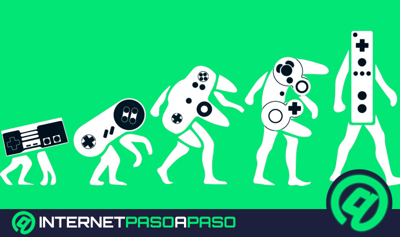
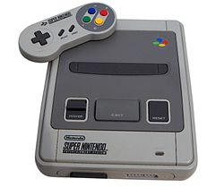
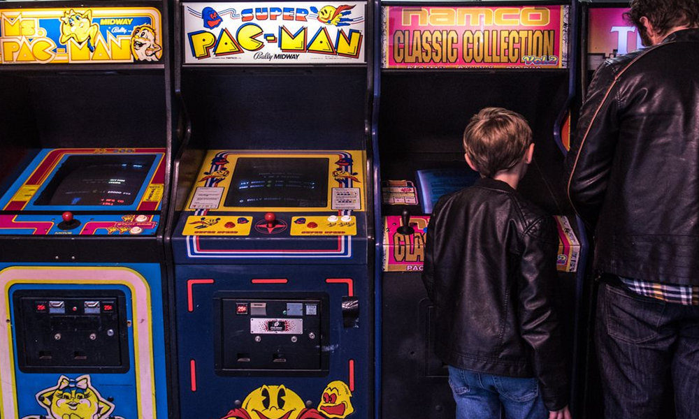

| 50's-60's; los primeros pasos | ||||||||||||
|---|---|---|---|---|---|---|---|---|---|---|---|---|
| Si bien el trabajo de Turing nunca fue comercializado, y su intención no era la de entretener sino de hacer que una máquina pensara como una persona, este fue citado y utilizado básicamente para todos los videojuegos que se desarrollaron a continuación. | ||||||||||||
|  |
| 70´s: el nacimiento del género | |||||||||
|---|---|---|---|---|---|---|---|---|---|
| Los años 70 fueron completamente diferentes a los anteriores. Los investigadores entendieron que el desarrollo de los videojuegos estaba ligado al desarrollo de aparatos que pudieran ejecutarlos. | |||||||||
|  |
| 80's; la era del Arcade | ||||||
|---|---|---|---|---|---|---|
| Los 80's llegaron con Space Invaders como el videojuego más vendido de la historia. Sin embargo en 1980 esto llegaría a su fin con el nacimiento del primer ícono de las gammers; Pacman. | ||||||
|  |
| 2000-2010; PlayStation vs Nintendo vs Xbox | |||
|---|---|---|---|
| La respuesta de Nintendo a la PlayStation fue la Gamecube, que sería un completo fracaso. Entonces SONY aprovecha esto para lanzar un segundo golpe de efecto con su PlayStation II, que al momento de su lanzamiento se convirtió en la consola más vendida de la historia de la industria. | |||
| 2010-actualidad: Nacimiento de los eSport |
|---|
| Para 2010 Internet ya estaba profundamente ligado a los videojuegos. Fifa y PES seguían con su competencia en el fútbol, Call of Duty seguía siendo el mejor FPS y World of Warcraft seguía en lo más alto del género MMORPG. |